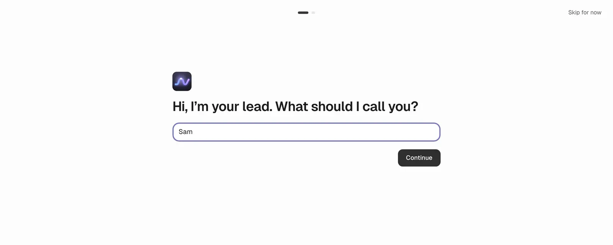
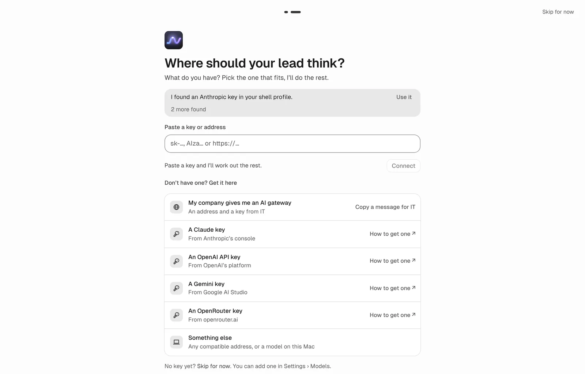
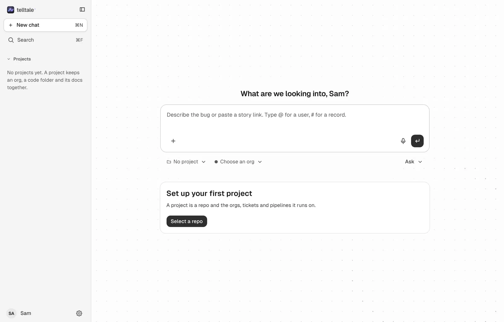
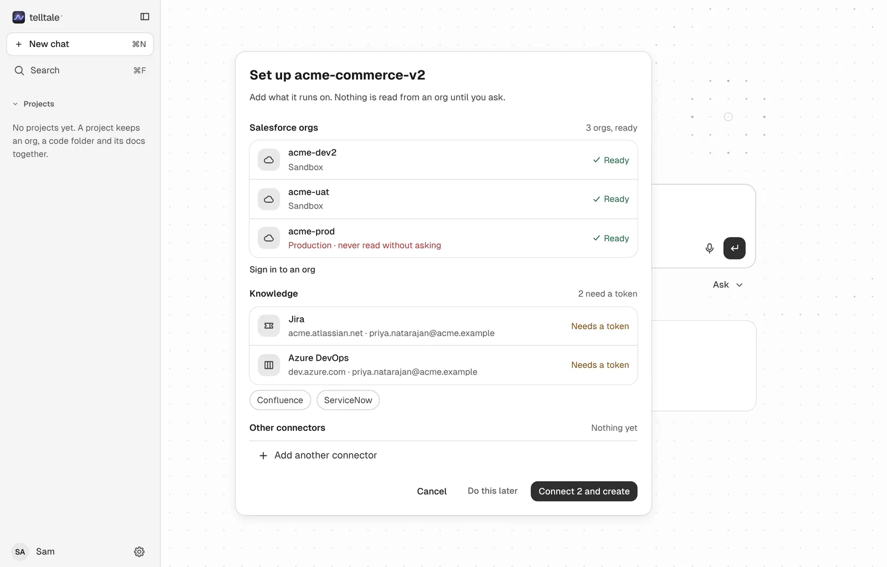
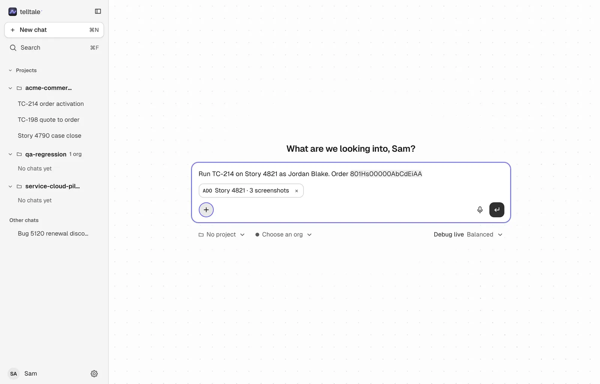
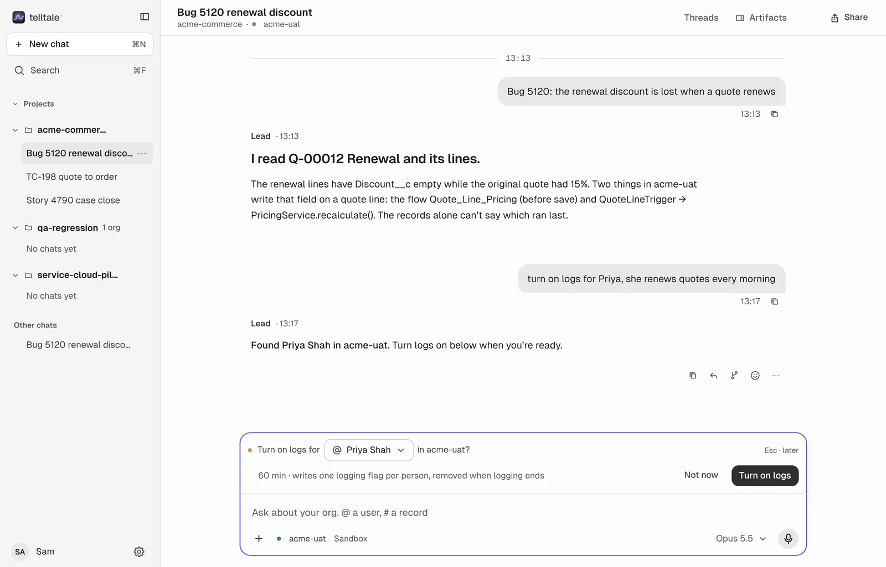
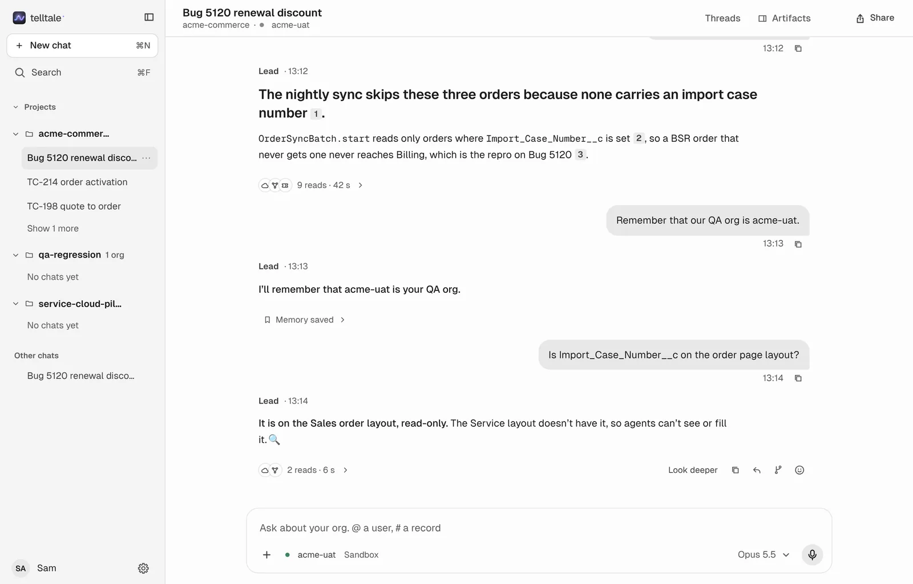

Guide · 1 of 5 · Get started
Written for Beta 1.8.1
Get started
From download to your first answer, in about five minutes. Setup keeps going in the background while you answer a couple of questions.
- A Mac running macOS 13 or later.
- An AI model. This is the one thing you must have: a key of your own, or your company's AI gateway.
- A Salesforce user with API access, plus View All Data or Manage Users so Telltale can turn on debug logs.
On a work Mac, IT may need to allow Telltale first.
Six steps
-
Install
Download the file that matches your Mac. Not sure which one you have? Open the Apple menu, choose About This Mac, and look at the line for Chip. "Apple M…" means Apple Silicon. "Intel" means Intel.
Open the download and drag Telltale onto Applications. Open it from there, because updates install only from Applications. If macOS asks whether you want to open an app from the internet, choose Open.
-
First launch
Two short screens. First your lead asks what to call you. Type your name and choose Continue.

Your lead is the one who answers your questions.
Then pick where your lead should think. If Telltale found a model on your Mac, choose Use it. Otherwise paste a key or a gateway address into Paste a key or address and choose Connect. No key yet? Open Don't have one? Get it here. You can also choose Skip for now and add one later in Settings.

-
What Telltale does in your org
You stay in control. In four lines:
- It only reads, apart from its own logging switches.
- Production always asks first.
- Nothing is deployed or run without your click, and never in production.
- Names, emails and secrets are masked before the AI model sees them.
The full picture is on page 4.
-
Sign in to an org
Open Settings, then Connectors, then Salesforce, and choose Sign in to an org. Pick the kind of org, give it a short name, and choose Open the browser to log in. Telltale never asks for your Salesforce password.
Orgs you already use on this Mac show up on their own, marked New.
-
Create your first project
A project is a code repository together with the orgs and tickets it runs on. On the start screen, choose Select a repo and pick one from GitHub or Bitbucket, paste a link, or choose a folder on your Mac.

Next, add the orgs and ticket tools it uses. Nothing is read from an org until you ask. Choose Create project, or Do this later to skip it.

You can also chat without a project. Your lead will ask for what it needs.
-
Your first chat, from question to answer
Type what broke, the way you'd tell a colleague. You can paste a story link, type @ for a user or # for a record.

When Telltale needs something from your org, it asks in a bar above the reply box. Here it wants to turn on logs for one person. Press 1 or Return to say yes, 2 for the next choice, or Esc to answer later. Logging in production always asks first.

Now reproduce the problem in your browser. Telltale reads each log as it arrives. The Reads pill by the reply box shows whether your lead Asks first before reading your org or is set to Auto.
The answer starts with the finding. Open the evidence under it to see exactly what your lead read.

Screens use made-up data.